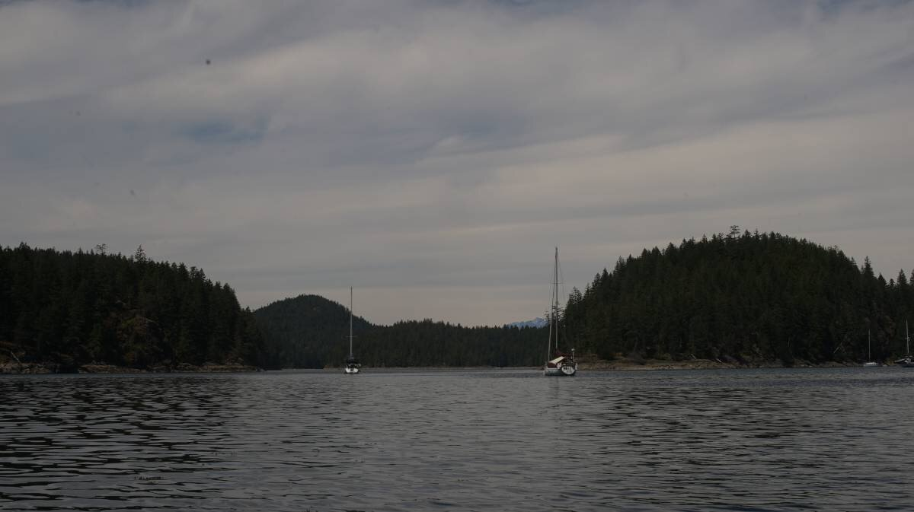
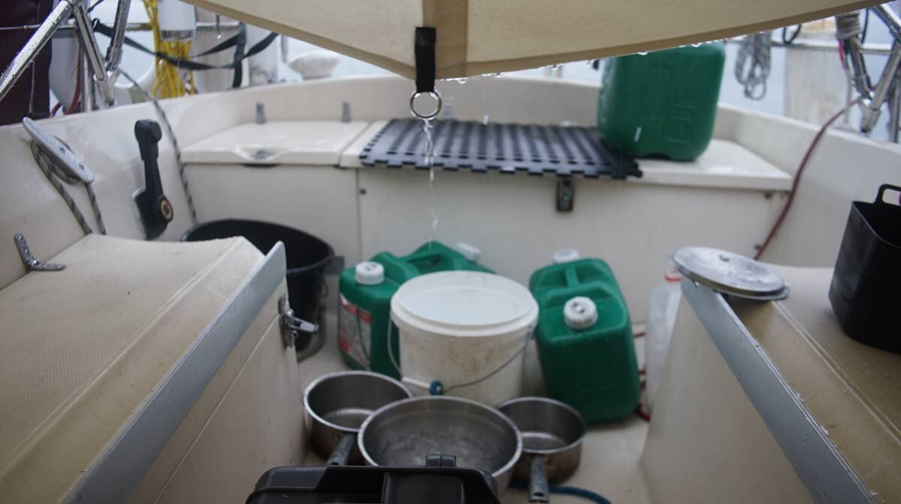

hathayim marine park

Click below dates for more recent updates:
What we refer to on this page as Cortes Island is the traditional, stolen, unceded land of the Klahoose, We Wai Kum, and Homalco First Nations people.
We left our beloved melanie cove on June 25th, in truth, we could have stayed there forever. It really was an amazing anchorage, but we had to move to Refuge Cove to upload an important video for our Nime 2022 talk. We were supposed to stream, but evidently, that was not possible on our slow connection. To upload this video, we needed a reliable connection. Cell coverage at other anchorages was fine for sending emails and other light tasks, but would never allow us to upload a 40 minute video. It took us 7 hours to upload the video at the docks in Refuge Cove, but even this speed would have been unthinkable in Melanie Cove.
The next day, on June 27th, we left the dock for Háthayim Marine Park (Von Donop) on Cortes Island, a 15 NM sail from Refuge Cove. We had planned on going to Squirrel Cove, just a short 2.3 NM leap across the channel, but after reading about sailors fouling their anchors on submerged engine blocks and logging equipement we decided to go elsewhere, we were going to explore the north of Cortes Island.
The wind was forecast to be 10-15 kn from the NW, right on the nose. To get to the northern end of Cortes, it is necessary to pass through a long narrow channel, Lewis Channel, we would need to do a lot of tacks to get up there. Pino, with its deep draft and tall mast, sails very well into the wind, and so we decided to work our sailing muscles and to go for it. The wind was at 10-11 kn to start, nice and smooth, the more we approached the mouth of the channel, the stronger the wind (accelerated through the channel). A sailboat was motoring behind us, they were kind enough to get out of our way as we made short tacks back and forth across the channel.
Sailing this way is long, and exhausting, especially in 27 C weather and under a full sun. In the channel we saw clear-cut areas from logging, places that where never replenished with new trees. New growth on faraway hillsides is easy enough to see, the trees are greener and draw a clear shape.
We arrived at the north of Cortes, there the wind decided to stop, and we motored the rest of the way. We assumed we would have better wind here, it is difficult to ever have a guarantee of wind in places dotted with many islands. The mouth of Hayathim Marine Park was just south of that point, where the entrance narrows, in the very center of this narrow was a rock, making all who pass near it sweat a whole lot. Because the inlet was big, there was a fair amount of current passing through this "pinch", strong enough that we let the engine idle, allowed it carry us through, hugging the right side of the channel with the accursed rock on our port side. We came in on a rising tide, to make sure there would be plenty of water under our keel.
We found a spot in the southernmost bay, dropping the hook in 25 ft of water. The bottom was mud, and sticky, perfect for weathering anything. It makes a mess when hauling the anchor back up on deck, but at least it made for a secure anchorage.
We arrived to the sound of a crow yelling, breaking the silence in the bay, it did not stop yelling for the entire day, and the next day, and the next. We called it a yell rather than a caw, because it sounded like a human trying to sound like a crow. The bay was eerily silent when there was no wind, in its absence the terrible crow voice was amplified threefold, and more so with the echos that followed.
Like all other anchorages we'd visited so far, people left as quickly as they'd arrived. Two minutes after dropping the hook the kayaks and paddleboards were in the water, then they'd do a quick paddle around the bay before happy hour, then the next morning they were gone, to hurry through many other anchorages, we imagine. There was a general sense of hurry, of having to see it all. Staying in one place a while and exploring it in full was not an option. It was necessary to collect anchorages like one would collect little trophies, or badges. If you stay anywhere for a single day, you haven't seen anything.
This marine wilderness park encompasses lakes, estuaries, a salt water lagoon and the old-growth forest Coast-Salish First nations call "ha̓θamɩn".

There was supposed to be both black bears and wolves on Cortes Island, we saw signs about it while walking the trail to the Squirrel Cove public dock. "You are now in Wolf country". This trail was very busy in the summer, and because it was maybe the bears and wolves know better than to come near.
The scattered old-growth Douglas-fir trees of Cortes Island that now stand like sentinels in small groups were once average sized trees in a continuous blanket of old-growth forest. While the lush second- and third-growth forests on Cortes are beautiful, they are ecologically very different from the old-growth fir, cedar and hemlock forests that they have replaced. Unless management plans are implemented to restore old-growth composition and structure to all forest types, the magnitude of the negative ecological changes will increase over time. These changes include loss of soil fertility, water quality, and biological diversity (source).
Back when logging was done by hand, axes were used to cut large notches in the base of the tree, the loggers would then insert a wood plank into the notch, stand on it, and use crosscut saws to saw down the massive old growth trees that blanketed the area. There is still logging happening here that continues to destroy ecologically sensitive ecosystems, that leave contamined water, no long-term jobs for residents, and that only really benefit people who live far away and that either aren't aware, or don't care about the cost of their business to the community or the province.


The trail to the Squirrel Cove public dock is around 5 km (10 km to and back). It was muddy at times, but the trail turned into a light stream for a while and it helped wash the mud away from our shoes. The path is marked by metal signs, posted on trees, bearing First Nations art of a beautiful stylized goat. We found the goat at various points, and with it there we knew where to go. Some paths were obscured with heavy fern, making it hard to see any ground at all. The path crossed into Klahoose First Nations territory, and eventually stopped at a road, but after walking in the forest a road is unappealing, we turned back. Roads are terribly straight and flat, and hot under a high sun. We prefer to walk before the eyes of wolves and bears rather than automobile headlights.
A few days later, we ended up walking the entire trail, to see if the general store in Squirrel Cove had anything worthwhile to offer. The road section of the trail was long, it had a good incline. Predictably, the selection was underwhelming. We found some potatoes and onions. These stores mostly carry packaged, processed goods, condiments, junk food, things that last but that aren't cheap to buy and that don't really fill you up. While there, we were told that the Rogers network was down, Canada-wide. Paying Interac wasn't possible, people had no internet, couldn't call, etc. The country was in a panic, but the forest didn't notice. We went back again later, returning with more potatoes, onions, and a 5 kg bag of basmati rice.
The General Store receives fresh produce on Saturdays, but the quantity is limited and is bought away fast. We're happy with potatoes and onions, especially when we can sprout legumes and grains aboard for fresh greens (see growing food).
Another plus of walking along that road, is that part of it is lined with salmonberries. Devine went to pick a bowlful. Salmonberries are closely related to raspberries, but each berry has a crown of leaves around it.
When walking in the forest, we like to take sticks with us to catch spiderwebs with instead of with our faces.
A good stick also doubles as a way to make noise, to alert creatures of our approach. Whenever we see a rock, we give it a good tap. Rock! "THONK!" Walk. Walk. Walk. Rock! "THONK!".

Rek went to swim a few times, with both a wet suit and without, the water isn't warm but the body adjusts. On one particular day, we noticed that there were no jellyfish in the water. The tide was big (the lowest tide on record) and perhaps they were swept out of the bay with the current. The jellyfish returned later, as the tide rose yet again to hug the trees on the coastline(note: we later learned that on warmer days they sink a few feet below the water, and rise again when it's cool). We went for a walk ashore that day, we had tied teapot to the trunk of a fallen tree. We had left the dinghy on the shore, but when we returned Teapot was afloat and trapped under a branch, laying at a terrible angle. We were glad to have tied the oars to the dinghy (we tied them together, and then onto the dinghy). Teapot wasn't having a good time, and neither did we because we had to wade over there in waist-high water to free it. In hindsight, we ought tied a longer line and left our dearest Teapot further from shore. There are too many things near shore to trap a dinghy, and the tide rises and falls too damn quickly.
We did not expect to get internet here, but we do get it, depending on where the wind points us. As usual, the internet is very slow and good for light tasks, but not for anything else.
We anchored here for over a month, it was well worth it. Because the area is a marine park, BC parks often has outhouses parked near the trail heads. We found it a good place to empty our dry toilet(we don't dump bags in, just the contents).

We returned to this anchorage in July 2023, with plans to stay for a few days, but this place has a pull on us, we ended up staying 24 days.
We anchored at the south end of the inlet (50°8.627'N, 124°56.684'W). This was a good spot, sheltered, and a short rowing distance from our favorite trail head.
This anchorage was the perfect place to get things done. It's big, quiet, sheltered, and plenty of good trails for what we call our "walk and talks", where we walk and talk about our current projects. Walk and Talks are a good way to solve problems, or to air out frustrations. Devine finished the first pass of corrections on Wiktopher here (on the 31st), and put their Strange Loop talk together (see computing and sustainability. Rek worked on Hakum, and would also do corrections on Wiktopher.
We'd become so familiar with this place that we were quick to notice any changes on the trails. We'd seen trees fall while here, and had become acquainted with the forest in various weather.
We had many days of rain, which we greedily collected to help refill our dwindling water supply. We caught about 30 L of water, with 20 L caught in one day.
This water was for washing, not for consumption (unless it is filtered, see rain, and water filtration).

After a big rain, a lot of forest critters emerge from their hiding spots.
We walked slow, keeping our eyes on the ground to try and find slugs, nails, frogs, and lizards.

On overcast, or rainy days, the trails become overrun with banana slugs - all kinds, all sizes. Some of them have black spots, others are yellow green. Their colors are indicative of their age, their health, what they eat, of general light exposure, and moisture levels.
Banana slugs break down animal droppings, dead plant material, and moss in the forest, they process it and turn it into soil humus. They work hard to make the forest floor more nutrient rich. We learned they could live to be 7 years old...! We wondered where the slugs go in warmer weather, we discovered that they either aestivate(a summer equivalent of hibernation), or coat their body in a thick layer of mucus to insulate themselves with soil and leaves. Our minds conjured up a very amusing image of a slug, thick with mucus, rolling around the forest floor accumulating dirt and leaves.
Unfortunately, we learned that banana slugs (a native species) may be slowly being displaced by black slugs (arion ater), a species native to Europe. We've come across so many black slugs that we assumed that they too, were native. While they look similar, and have similar behaviors, it is thought that they may consume more because they have shorter lifespans (up to one year, instead of 1-7), requiring them to consume faster to reach reproductive maturity.
We spent a lot of time reading up on this, trying to figure out if black slugs were really displacing banana slugs, but nothing seemed to be conclusive. Black slugs are considered horticultural pests, they can also pose a problem in sensitive ecosystems, although in some other ecosystems it seems that them being detritivores could be an asset.
Slugs really are amazing creatures. The more we see them, the more we've come to love them. Now, when we walk the trails in wet weather we keep our eyes on the ground, mindful not to squish one.
We also saw many lovely snails.


The water we collected helped to extend our stay, but we then made plans to stop in Heriot Bay to fill-up. Before leaving, we checked out engine's water filter and were a bit shocked to find it completely opaque.
We opened the filter, and it reeked of dead fish. "Shit," we said, "maybe a fish, or a squid or something got caught in here and died!"
The smell was so awful that Devine couldn't stay in the boat.
Checking the strainer, we found a piece of algae. It seemed like our engine's water intake sucked up some seaweed while we were in Refuge Cove, and that it started rotting in there, soaking in the water filter basket for 24 days.
Gross.
We cleaned it out, and left the anchorage on August 10th 2023.
We stayed here again, for 18 days, after returning from our trip to the north coast of bc and us se alaska.
We met up again with Rob and Grace on their boat Nanamuk, they lent us this hand-drawn map of all of the trails on the island. They have explored it thoroughly, over many years. We accompanied them on the walk to Cliff Peak.
We scanned their map to have a copy, but also thought that other sailors, or land-bound explorers, would enjoy seeing all of the existing trails on this part of Cortes Island.